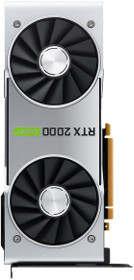
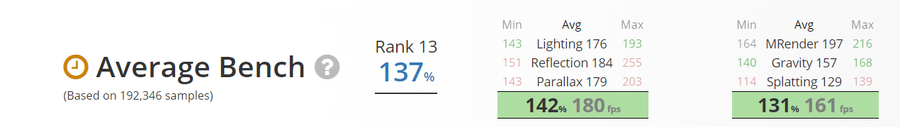

The NVIDIA® GeForce® RTX 2080 SUPER™ is powered by the NVIDIA Turing™ architecture with more cores, higher clocks, and faster memory for ultimate performance and incredible new levels of realism. It’s time to gear up and get super powers.

$699.99
Specifications
Manufacturer: NVIDIA
Chipset: GeForce RTX 2080 SUPER
Memory: 8 GB
Memory Type: GDDR6
Core Clock: 1650 MHz
Boost Clock: 1815 MHz
Effective Memory Clock: 15500 MHz
Interface: PCIe x16
Color: Silver
SLI/CrossFire: 2-way SLI Capable
Frame Sync: G-Sync
Length: 266.74 mm
TDP: 250 W
DVI Ports: 0
HDMI Ports: 1
Mini-HDMI Ports: 0
DisplayPort Parts: 3
Expansion Slot Width: 2 Fans
External Power: 1 PCIe 8-pin + 1 PCIe 6-pin
Display Port: 3
HDMI: 1

Features
- Dedicated ray tracing hardware enables fast real-time ray tracing with physically accurate shadows, reflections, refractions, and global illumination.
- Artificial intelligence is driving the greatest technology advancement in history, and Turing is bringing it to computer graphics. Experience AI-processing horsepower that accelerates gaming performance with NVIDIA DLSS 2.0.
- Variable Rate Shading focuses processing power on areas of rich detail, boosting overall performance without affecting perceived image quality. Mesh Shaders advanced geometry processing supports an order of magnitude more objects per-scene, allowing the creation of rich complex worlds.
- Simultaneous floating point and integer processing enables Turing GPUs to more efficiently process the compute heavy workloads of modern games.
Shopping
Reviews from Customers
You can really feel the quality and attention to detail just by holding the card, it definitely does not feel cheap. Personally I love the reflection on the super card, it goes with my build and looks super clean. Its representation kina feels like an apple product , premium. With it's all aluminum build it packs some serious power, easily dominating 1440p and 4k games, especially games for ray tracing. I would stay away from the 2080 ti , it's way to expensive, I feel as the 10 -15 fps difference is not worth it for that much performance. I think the 2080 super is the sweet spot.but if you've the money go for it or sli with the 2080 supers.i love that it is quiet, like extremely quiet ,probably because I upgraded from a gtx 1060 to the rtx 2080 I can just tell the difference and appreciate its noise level. The heat since does a really good job at keeping things low at heavy load, I tried a couple rtx games and it didnt make my room hot like my gtx 1060 on regular games. Overall I was glad I made this purchase especially how hard it was to obtain this cause they always went out of stock but i see why, the founder's edition cards is just better than the third party cards in my opinion. Its almost perfect but I do have 1 complaint and it's the dawm green led, you can't change it or turn it off and can throw off any good looking build, I heard that it was rgb but nvidia took the feature off, i understand it's their branding but I would have definitely love color change or at least an option to turn off. Some people don't want any lights in their system, luckily I found a way to turn it off in the evga precision drivers x1 but I shouldnt have to use a third party as to turn it off. Anyways that concludes my review it's a definite comp if your thinking of buying this high end card - User from Best Buy
I mostly play First person shooter games I like to run things on those settings on this and requires less vram use and to come to find out this GPU is probably one of the best ones and the fact that it’s the founders edition of the super line up you can’t go wrong. - User from Best Buy
You can pretty much run every game on high settings without a problem. If you are into overclocking you can definitely get a big bump in performance just make sure you have proper cooling - User from Best Buy